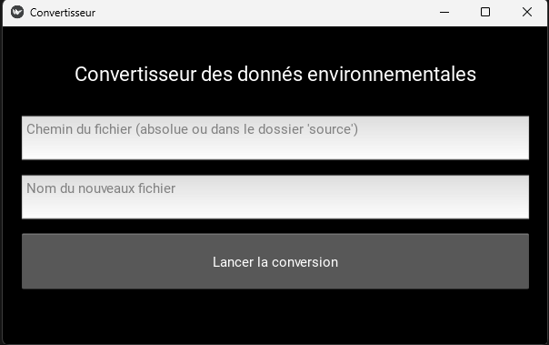
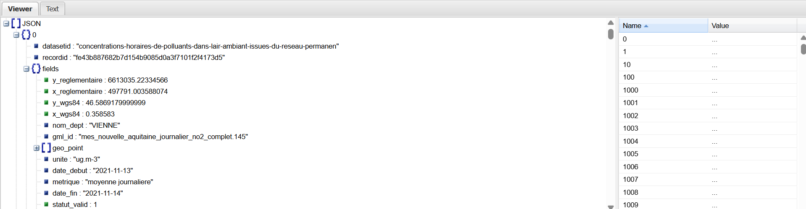
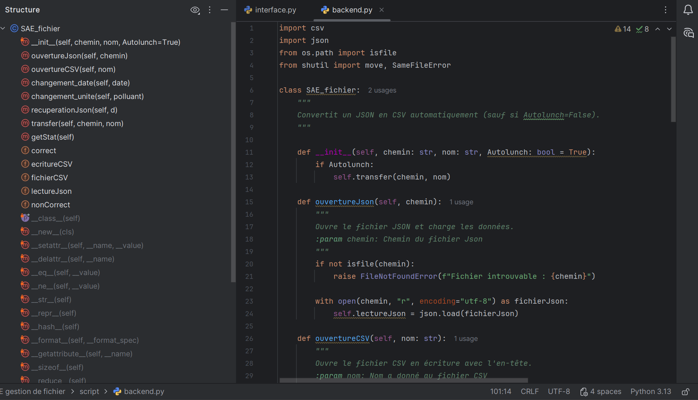

🗄️ SAÉ - Écriture et lecture de fichiers de données
Création d'un outil de conversion de fichier JSON en CSV en Python (rendu en .exe).
Le 1er semestre a été une remise à niveau en informatique et programmation. Nous avons donc revu (ou vu pour certains) les bases de l'algorithmique, ainsi que la lecture et l'écriture de données. Pour nous entraîner sur ces nouvelles compétences, nous avons réalisé ce projet.
Avec Python, nous devions parcourir un fichier JSON, en extraire uniquement certaines informations, puis les écrire dans un fichier CSV. Il y avait donc l'utilisation de listes et de dictionnaires Python. Le fichier JSON était un fichier issu de capteurs de CO2 de la région. Nous devions donc comprendre la structure du JSON avant toute manipulation.
Pour ma part, étant déjà initié à la programmation, je me suis amusé à aller un peu plus loin en ajoutant une interface graphique (minimaliste) permettant de sélectionner le fichier d'entrée (JSON) et de nommer le fichier résultat (CSV), avec gestion des chemins absolus ou relatifs. Le livrable a été rendu sous forme de .exe. Le code a été réalisé en Programmation Orientée Objet (POO).
- Choix du fichier d'entrée et de sortie.
- Lecture et extraction du fichier JSON.
- Écriture des données demandées dans le fichier CSV.
- Application sous forme exécutable (.exe).
- Levée d'exceptions pour plus de robustesse.
Je ne connaissais que peu la bibliothèque Kivy (interface graphique multiplateforme en Python). Cela m'a donné l'occasion de travailler cette compétence. J'ai également pu me former au passage d'un script Python (.py) à un exécutable (.exe).



- Se repérer dans une structure de données imbriquée.
- Trouver, extraire puis écrire des données.
- Gestion des chemins d'accès.
- Création d'une interface graphique simple.
- Transformation d'un script Python (.py) en un exécutable (.exe).
Comprendre les structures algorithmiques de base et leur contexte d'usage.
Parmi les apprentissages critiques (éléments à maîtriser dans la formation, à dimension très académique), je pense que ce projet correspond le mieux à celui cité ci-dessus. En effet, il a fallu comprendre la structure du fichier JSON afin de créer un algorithme simple mais efficace pour en récupérer les données et les restituer au format CSV. De plus, le jeu de données étant de l'open data, récupérer certaines informations et les retranscrire en CSV permettait une future exploitation (Excel ou DataFrame par exemple). Cela m'a permis de comprendre qu'il est parfois nécessaire de créer de petits algorithmes pour rendre des données exploitables.